LA LITERATURA DEL SIGLO XIX
REALISMO Y NATURALISMO
IES TORRE DEL REI
Prof. Nuria Ribés
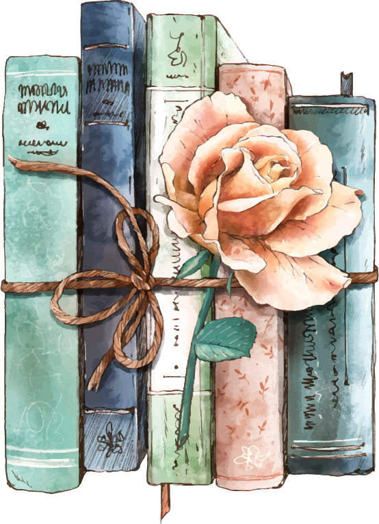
CONTENIDOS
- ✸ Contexto histórico. 2ª mitad siglo XIX
-
✸
Realismo y Naturalismo:
- Características generales
- La novela realista. Galdós
- Otros autores: Clarín, Pardo Bazán
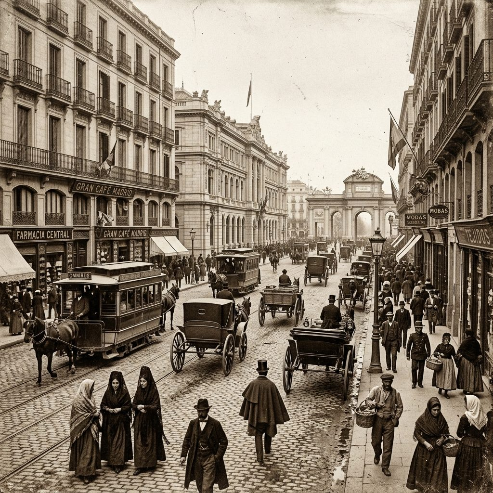
CONTEXTO HISTÓRICO
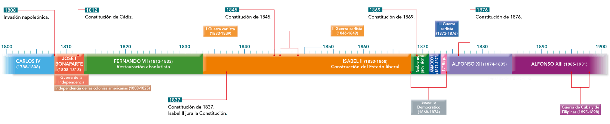
Haz clic en cada etapa para ver los hitos históricos clave:
Invasión napoleónica e inicio del conflicto. Constitución de Cádiz en 1812.
Restauración absolutista e independencia de las colonias americanas (1808-1825).
Construcción del Estado liberal. Periodo marcado por las Guerras Carlistas y constituciones de 1837 y 1845.
Revolución democrática que expulsa a Isabel II de España e instaura un gobierno provisional.
Reinado democrático breve de Amadeo de Saboya, condicionado por una gran inestabilidad.
Primera experiencia republicana en España, sacudida por la III Guerra Carlista.
Restauración de la monarquía borbónica. Se promulga la Constitución estable de 1876.
Periodo de crisis colonial (Pérdida de Cuba y Filipinas en 1898) y fuerte desarrollo del movimiento obrero.
CONTEXTO HISTÓRICO
Un final de siglo convulso...
-
✸ 1868. Revolución del 68 (la Gloriosa)
- - 1869: Constitución democrática
- ✸ 1871-1873. Reinado de Amadeo I de Saboya
- ✸ 1873-1874. I República española
-
✸ 1874-1931. Restauración borbónica
- - Alfonso XII (1875-1885)
- - Alfonso XIII (1885-1931)
- ✸ Nacimiento y desarrollo del movimiento obrero
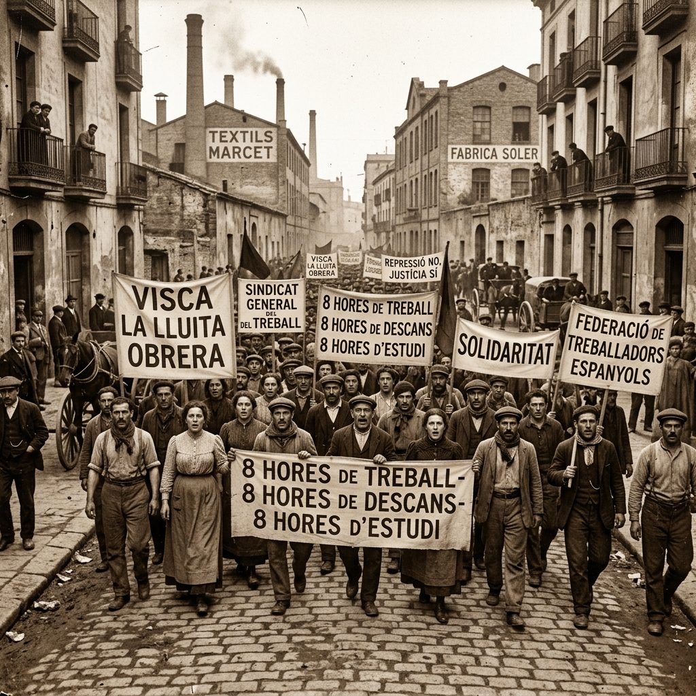
REALISMO Y NATURALISMO
Evolución de temas y formas
| Criterio | Romanticismo | Realismo - Naturalismo |
|---|---|---|
| Actitud del artista | El romántico rechaza la sociedad burguesa y huye hacia épocas pasadas o culturas lejanas y exóticas. | El escritor realista se identifica con los valores de la sociedad burguesa, aunque a veces la critique para reformarla. |
| Método artístico | El arte es producto de la inspiración y de la subjetividad. | El arte es un producto de la observación directa y minuciosa de la realidad (un documento fotográfico). Y para alcanzar la mayor objetividad, se emplea el método científico, que consiste en observar, documentarse y experimentar. |
| Temas | Los temas románticos surgen de los delirios de la fantasía y de los sentimientos, o bien se inspiran en las leyendas heroicas del pasado medieval. | La materia literaria del escritor realista es la realidad social contemporánea, es decir, el mundo cotidiano en el que vive. |
| Personajes | Personajes heroicos, idealizados, rebeldes, que se enfrentan a la sociedad y a las fuerzas del destino. | Personajes anónimos, vulgares, influidos por la sociedad y que por primera vez en la literatura no son objeto de burla, sino que pueden llegar a adquirir una dimensión trágica. |
| Género literario | El Romanticismo brilló especialmente en lírica y teatro. | El género realista por excelencia es la novela. |
| Lenguaje | Vocabulario y expresiones tremendistas, hiperbólicas. A veces se «envejece» el lenguaje mediante arcaísmos. | Lenguaje coloquial y dialectal en los diálogos, que se combina en el Naturalismo con el léxico científico del narrador. |
Clasifica el siguiente enunciado. Haz clic en el movimiento correcto:
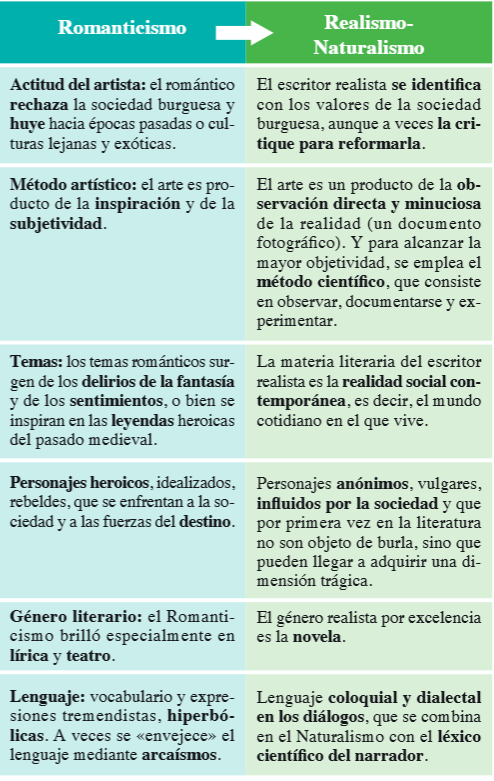
Del ROMANTICISMO...
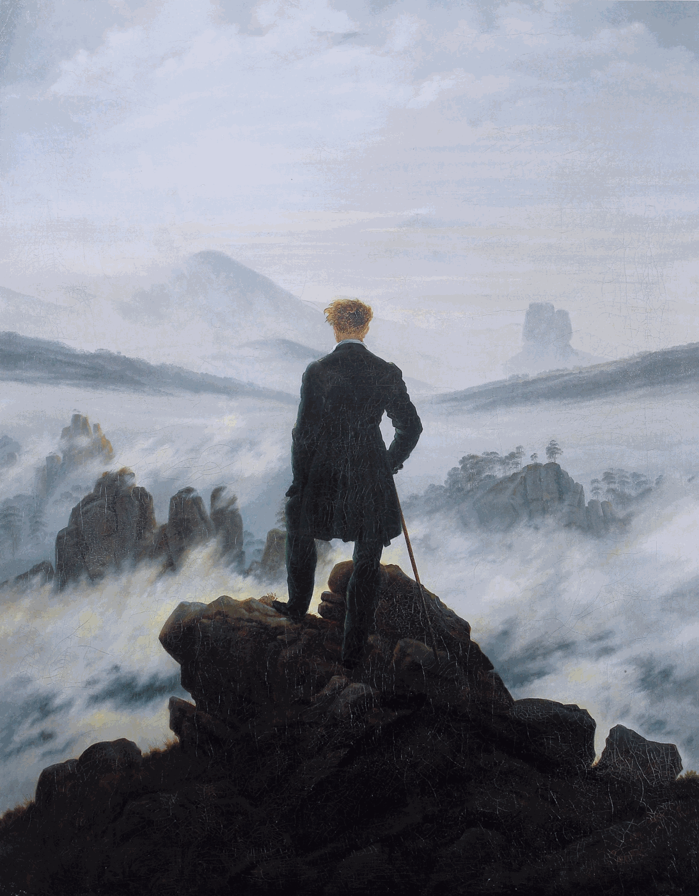
Caminante sobre un mar de nubes
Caspar David Friedrich (1818)
La obra cumbre del Romanticismo pictórico representa la exaltación de la subjetividad, la naturaleza sublime, la soledad heroica y la proyección de los sentimientos internos sobre el paisaje, elementos clave que el Realismo posterior rechazará en búsqueda de la verdad objetiva.
...al REALISMO Y NATURALISMO
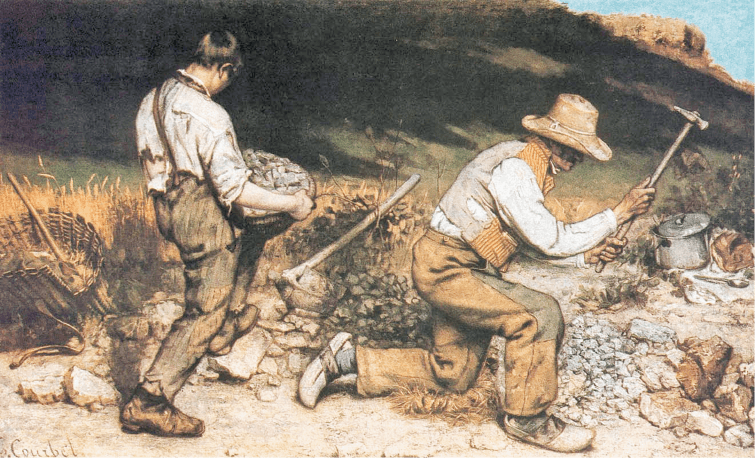
Los picapedreros
Gustave Courbet (1849)
El realismo pictórico irrumpe retratando la crudeza del trabajo manual y la reality social de las clases bajas sin idealizaciones. Se busca plasmar de forma sincera, directa e incluso descarnada a los personajes anónimos del mundo contemporáneo.
EL REALISMO Y NATURALISMO
Características generales
El Realismo es un movimiento artístico y literario que tiene como propósito representar de forma minuciosa y objetiva una realidad contemporánea muy concreta: la vida cotidiana y los problemas de la sociedad burguesa de la segunda mitad del siglo XIX.
El arte como espejo y denuncia de la realidad
- El arte muestra la realidad y es el lector el que juzga lo que lee y actúa en consecuencia.
- Observación racional del entorno, opuesto al idealismo romántico.
Mímesis y verosimilitud
- Observación directa y descripción de la realidad.
- Los héroes románticos dejan paso a personajes corrientes de la clase media.
En cambio, otros -los naturalistas- llegaron más lejos. No solo observaron objetivamente el comportamiento del hombre y de la sociedad, sino que intentaron explicarlo con las nuevas teorías científicas del siglo XIX: las leyes de la herencia biológica y la selección natural de las especies.
EL REALISMO Y NATURALISMO
EL REALISMO
Es un movimiento artístico y literario que se desarrolló en la segunda mitad del siglo XIX y que tiene como objetivo representar, de forma minuciosa y objetiva, la vida cotidiana y los problemas de la sociedad burguesa de su época. Estas son sus características principales:
- ✸ OBSERVACIÓN DE LA REALIDAD. Emplearon el método científico, que consiste en documentarse y observar la realidad de forma directa. Rechazaron el subjetivismo y pretendieron crear documentos fotográficos de la realidad.
- ✸ CENTRADOS EN SU ÉPOCA. Como si fueran periodistas, se centran en la realidad social contemporánea, es decir, en el mundo cotidiano en el que viven.
- ✸ ANTIHÉROES. Personajes anónimos de clase media y obrera que a veces adquieren una dimensión trágica que los dignifica.
- ✸ LENGUAJE. Reproducen fielmente el lenguaje coloquial y dialectal de los personajes.
- ✸ MENTALIDAD. El escritor se identifica con la sociedad burguesa aunque la critique para reformarla.
- ✸ GÉNERO LITERARIO. Cultivan fundamentalmente la novela, desechando la poesía romántica.
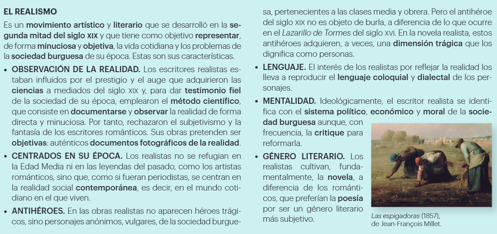
EL REALISMO Y NATURALISMO
EL NATURALISMO
Es un movimiento literario que deriva del Realismo y lleva al extremo las ideas de este movimiento: aplicando el método científico, analizan la influencia que las leyes biológicas y el medio tienen sobre el comportamiento de sus personajes, basándose en Gregor Mendel y Charles Darwin.
- ✸ IDEOLOGÍA. Concepción pesimista de la vida a partir de teorías biológicas deterministas; el ser humano está condicionado por las leyes de la herencia y el ambiente social pobre y sórdido en el que vive.
- ✸ CRONOLOGÍA. Se desarrolló en España en la década de 1880, influido por Émile Zola. Destacan La desheredada (1881) y Fortunata y Jacinta (1887) de Galdós.
- ✸ LA POLÉMICA. Autores cristianos como Juan Valera **rechazaron** el movimiento porque reflejaba los aspectos **más sórdidos de la realidad** (alcoholismo, prostitución...) y negaba la libertad humana en favor de la **herencia biológica** y el **ambiente**.
Defensores: Emilia Pardo Bazán, Galdós, Leopoldo Alas, «Clarín», y Blasco Ibáñez («el Zola español»).
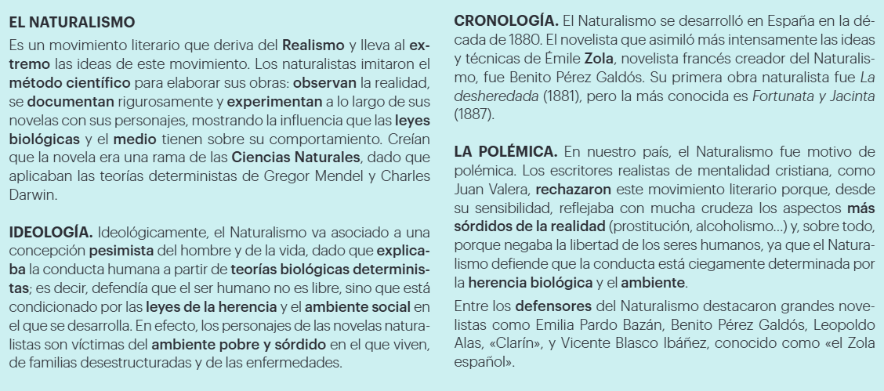
Actividades
Actividad dossier (Aules)
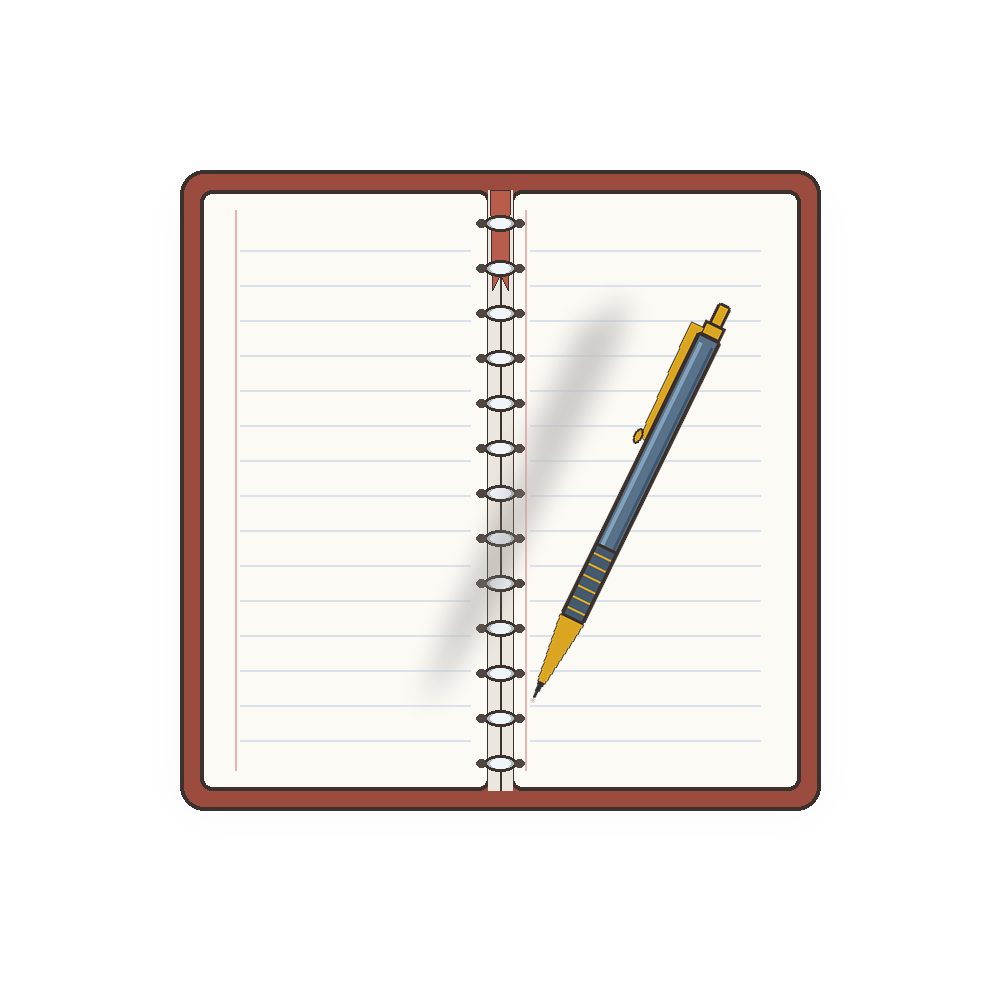
EL REALISMO. La novela
LA NOVELA REALISTA
Este tipo de novela se desarrolló en España entre 1868 y 1880. Observa sus principales características:
- ✸ NARRACIÓN VEROSÍMIL. Relato, ambiente, personajes y lenguaje resultan creíbles, alejados de la fantasía.
- ✸ OBSERVACIÓN OBJETIVA. Estudio directo y al natural de la realidad (pretende ser un documento fotográfico).
- ✸ PREDOMINIO DE LA DESCRIPCIÓN. La acción narrativa resulta lenta debido a las extensas secuencias descriptivas físicas y psicológicas que detienen la trama.
- ✸ NARRADOR OMNISCIENTE. Sabe y ofrece información sobre los pensamientos y **sentimientos** más íntimos de los personajes.
- ✸ TEMAS. Temas universales (adulterio) e ideológicos (tradición frente al progreso, anticlericalismo, infraviviendas).
- ✸ LENGUAJE. Sencillo y referencial del narrador, que contrasta con el habla regional o coloquial en los diálogos.
- ✸ MENTALIDAD. Novelas de tesis que defienden posturas ideológicas (España tradicional y conservadora frente a liberalismo y progreso).
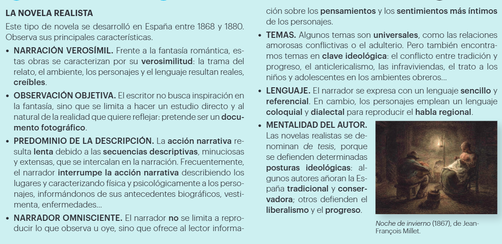
EL REALISMO. La novela
Benito Pérez Galdós (1843-1920)
- ✸ Mejor novelista español del s. XIX y uno de los autores más prolíficos de las letras castellanas.
- ✸ Toda su obra está inspirada por el noble ideal ilustrado de que desde la literatura se puede modernizar la sociedad y que la educación es el instrumento más importante para el progreso del país.
- ✸ La fontana de oro (1870) → inicio del realismo en España.
- ✸ Los Episodios nacionales. Son historias noveladas sobre acontecimientos históricos de España en el siglo XIX. Comienzan con la batalla de Trafalgar (1873) para aprender del pasado y proyectar el progreso social.
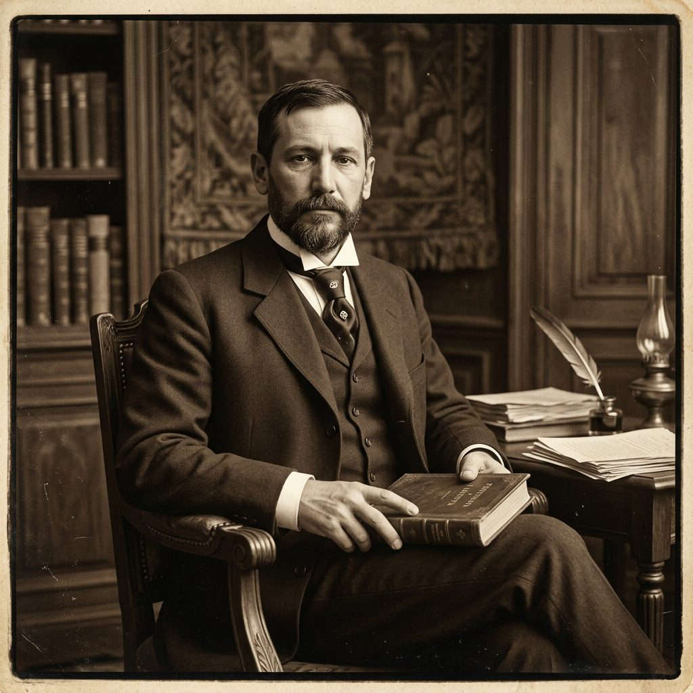
EL REALISMO. Benito Pérez Galdós (1843-1920)
Primera época: Realismo
- Novela histórica: Episodios nacionales.
Aprender del pasado para construir una sociedad mejor, basada en la paz y el progreso.
- Novelas de tesis: Marianela y Doña Perfecta.
Defensa del progreso y la ciencia. Analizan los defectos españoles de intolerancia e ignorancia.
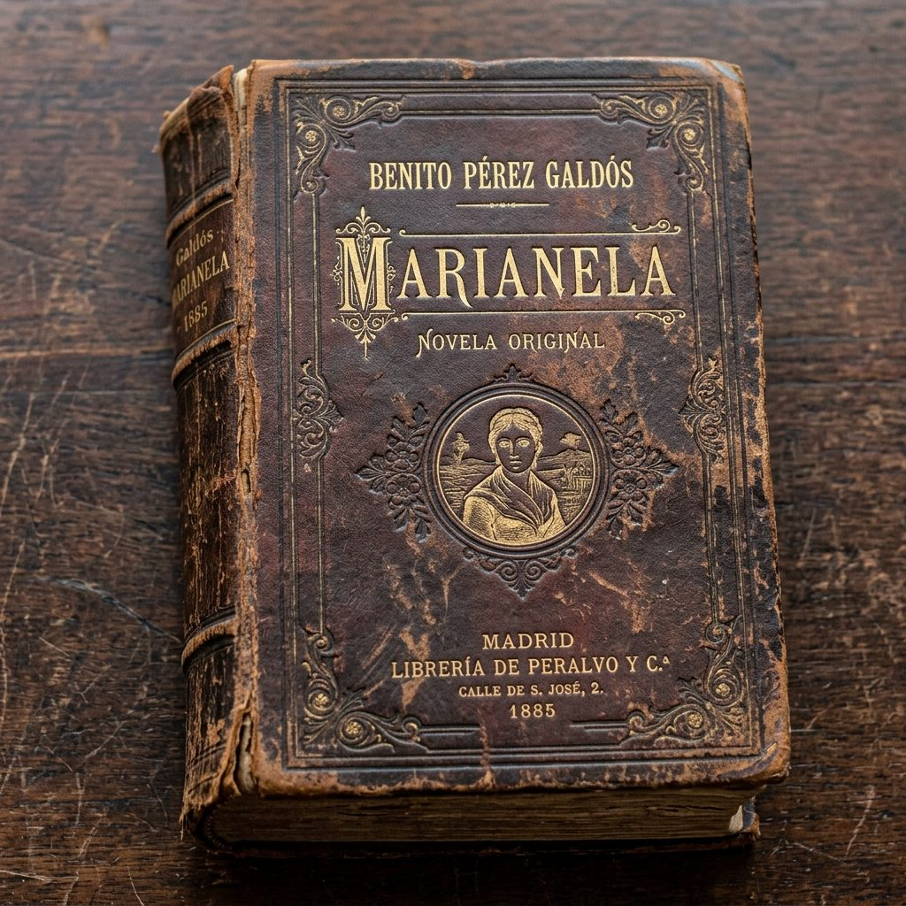
Segunda época: Naturalismo
- Novelas contemporáneas: Fortunata y Jacinta y Lo prohibido.
Reflejar la sociedad madrileña que vivió el autor. El tema es el afán por aparentar de las clases medias venidas a menos bajo el influjo del ambiente y la herencia.
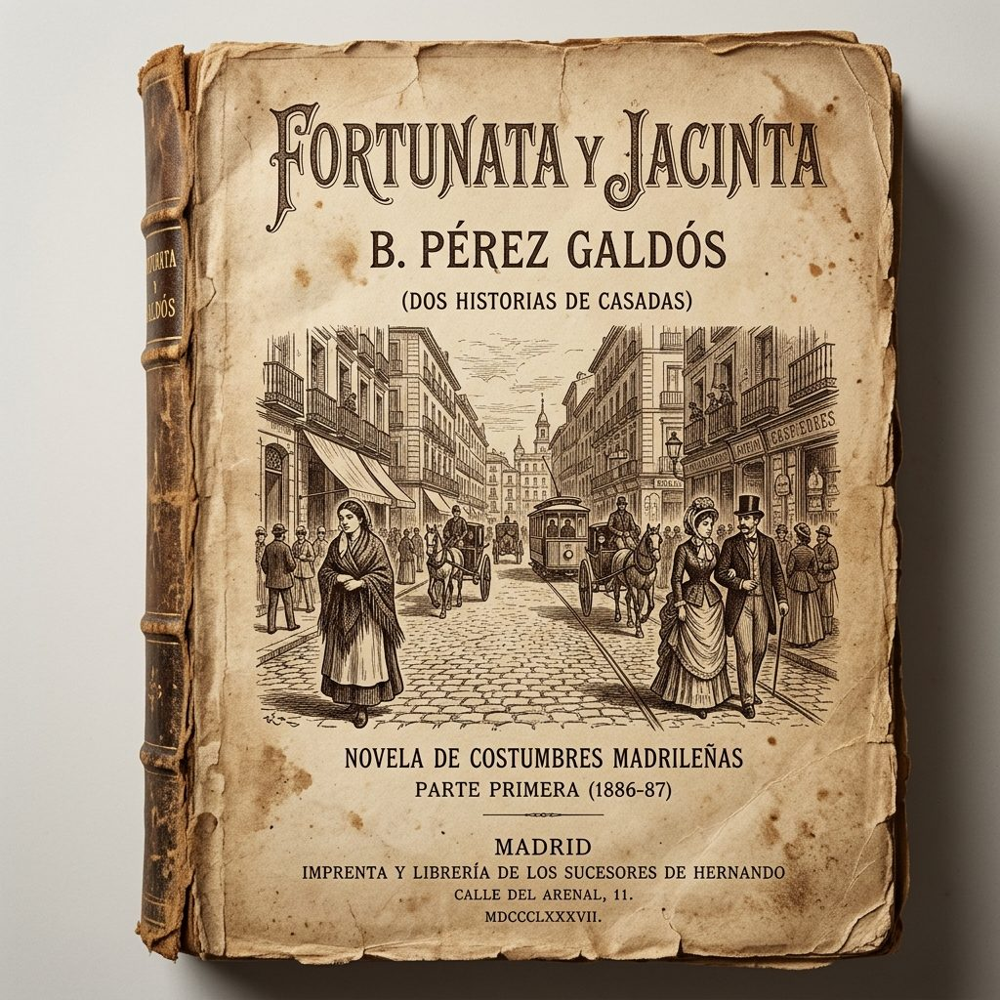
Tercera época: Espiritualismo
- Superación del Naturalismo: Nazarín y Misericordia.
Mostrar que la vida no está determinada ciegamente por el ambiente, sino que el hombre se construye mediante la voluntad y los ideales.
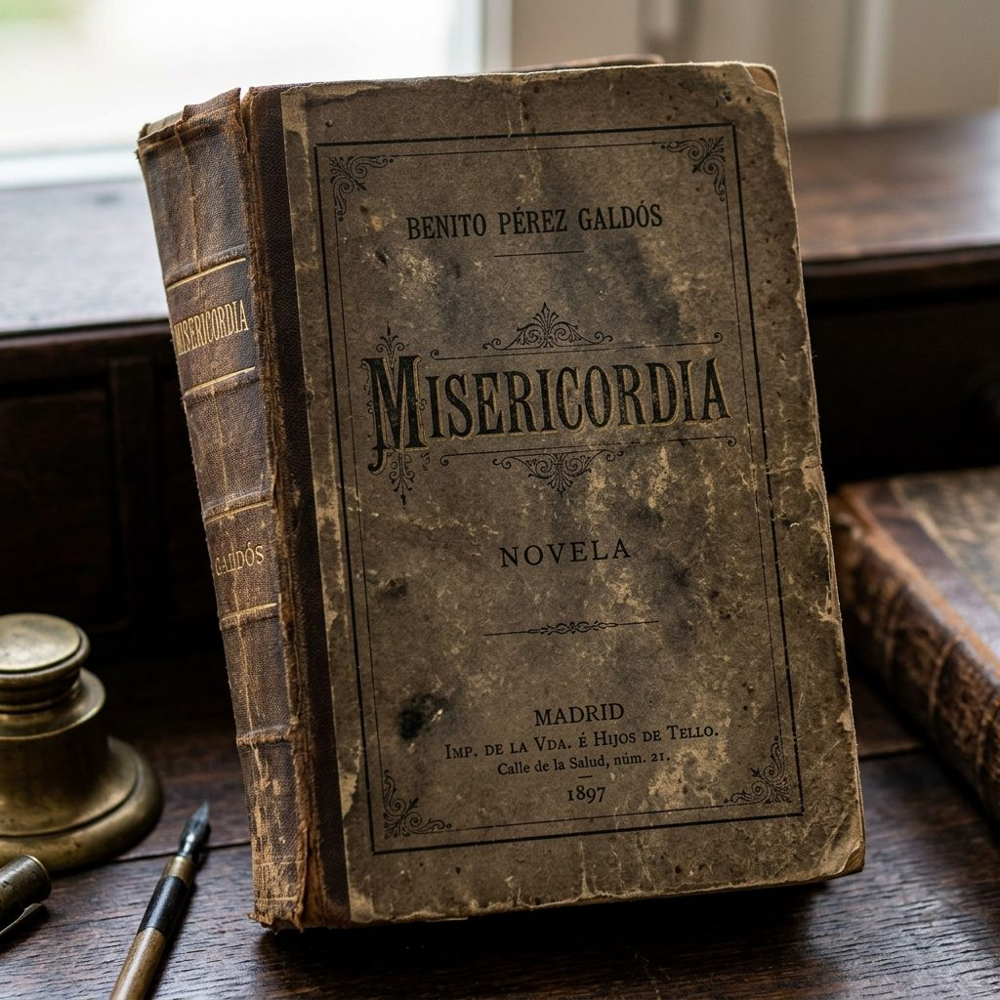
La Ruta Literaria por el Madrid Galdosiano
Benito Pérez Galdós describió las calles y gentes de Madrid con precisión fotográfica. Haz clic en las paradas clave de su mapa literario:
Plaza Mayor / Cava de San Miguel
Escenario clave de Fortunata y Jacinta. Aquí vive la familia de Santa Cruz y se sitúan comercios tradicionales.
Puerta del Sol
Punto de encuentro, debates políticos y pulso de las clases populares y medias en sus novelas contemporáneas.
Barrio de Maravillas (Malasaña)
Representa el Madrid menestral, de los talleres, las corralas y la pequeña burguesía esforzada por aparentar.
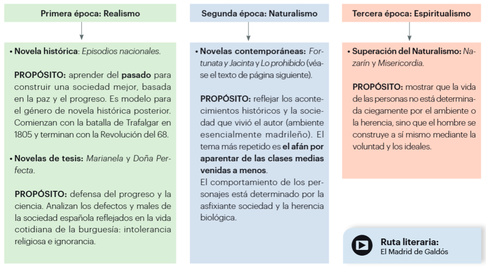
Actividades
Pág. 77, nº 31
Abre tu libro en la página 77 y realiza la actividad nº 31. Analiza el fragmento de la obra de Galdós atendiendo al reflejo de la burguesía y su afán por aparentar.
EL NATURALISMO. La novela
CARACTERÍSTICAS DE LA NOVELA NATURALISTA
| CARACTERÍSTICAS IDEOLÓGICAS | CARACTERÍSTICAS LITERARIAS |
|---|---|
|
Punto de vista crítico A diferencia de los escritores realistas, los naturalistas son muy críticos con la burguesía y el capitalismo. Su objetivo es denunciar la degradación e injusticias de la sociedad burguesa; por ello, numerosas novelas se centran en el proletariado urbano y campesino con el propósito de mostrar la miseria, las infraviviendas, las enfermedades, la explotación laboral y la falta de higiene y de educación. |
Acción narrativa lenta Las novelas naturalistas son muy extensas y la acción es escasa, debido a las numerosas descripciones objetivas y minuciosas que se interpolan en la trama. |
|
Intencionalidad Estos novelistas se consideran científicos sociales y, a partir de sus obras, pretenden reformar la sociedad. Por ello, reivindican la asistencia médica, la importancia de la educación y la mejora de las condiciones laborales de los trabajadores. |
Protagonista colectivo El protagonista de la novela es el personaje colectivo; es decir, un grupo social que actúa según determinadas aspiraciones, sentimientos o quejas: mineros, trabajadores fabriles, etc. Los personajes individuales padecen habitualmente malformaciones físicas, a veces debidas a enfermedades profesionales, como la silicosis de los mineros, y a taras psíquicas heredadas. |
|
Concepción materialista de la vida Para los naturalistas, la conducta humana está determinada por los instintos, las leyes de la herencia (Gregor Mendel) y el ambiente (Charles Darwin). |
Lenguaje El narrador emplea un léxico científico, dado que escribe influido por la biología, la medicina, la teoría evolucionista de Darwin o la sociología de la época. Los personajes populares, en cambio, emplean vocablos de diferentes jergas y dialectalismos, así como el lenguaje coloquial. |
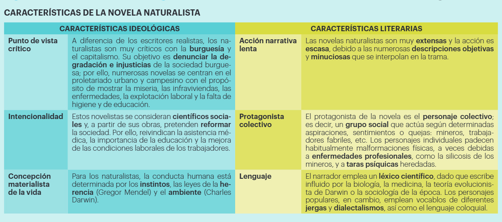
EL NATURALISMO. La novela
Emilia Pardo Bazán (1851-1921)
- ✸ Fue la mejor novelista del siglo XIX.
- ✸ Mujer culta (primera catedrática universitaria de España) y con gran éxito social y literario.
- ✸ Introductora y principal difusora del Naturalismo en España a través de sus artículos en La cuestión palpitante.
- ✸ Combinó los métodos naturalistas (observación del medio y la degradación rural gallega) con la tradición cristiana y la defensa del libre albedrío frente al determinismo absoluto francés.
- ✸ Gran precursora del feminismo: defendió el derecho de las mujeres a una educación científica, la autonomía intelectual y la igualdad legal.
- ✸ OBRAS clave: Los pazos de Ulloa (1886) y La madre naturaleza (1887).
EL NATURALISMO. La novela
Emilia Pardo Bazán (1851-1921)
EL NATURALISMO. La novela
Emilia Pardo Bazán (1851-1921)
Contesta las preguntas relacionadas con el vídeo:
a. ¿Dónde se desarrolla Los pazos de Ulloa? ¿Qué dos temas se tratan en la obra?
b. ¿Cómo son los personajes de esta novela?
c. ¿Qué relación tiene Emilia Pardo Bazán con el feminismo?
EL NATURALISMO. La novela
Leopoldo Alas, Clarín (1852-1901)
- ✸ Junto con Galdós, está considerado uno de los grandes escritores del siglo XIX en la península.
- ✸ Excelente crítico literario temido por sus artículos punzantes y agudos. Posee una escasa producción literaria de novelas largas, pero de extraordinaria calidad.
- ✸ Vinculado toda su vida a Oviedo (que rebautizaría como Vetusta en su ficción), donde ejerció como brillante catedrático de Derecho en su universidad.
- ✸ Obra cumbre: La Regenta (1884-1885).
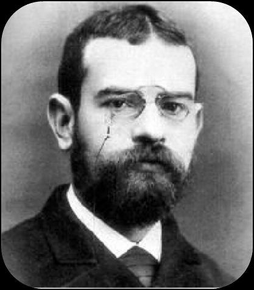
EL NATURALISMO. La novela
Leopoldo Alas, Clarín (1852-1901)
La Regenta (1884-1885)
- ✸ Novela cercana al Naturalismo al exponer la falta de libertad de sus personajes para elegir su destino, condicionados por la asfixiante presión social y moral de una ciudad provinciana.
- ✸ Provocó un gran escándalo en la época por su anticlericalismo y su sátira de la Iglesia y la alta sociedad, lo que motivó que no tuviera un éxito inmediato, siendo censurada por la jerarquía eclesiástica.
- ✸ Tema: el adulterio de Ana Ozores.
- ✸ Crítica a todos los estamentos de la sociedad de la época: el clero corrupto, la aristocracia decadente, la burguesía vulgar e hipócrita y los falsos intelectuales.
Estilo literario de La Regenta
a. Voz del narrador: se alterna el punto de vista objetivo y neutral al presentar a los personajes con momentos subjetivos. En efecto, se hace uso de la crítica burlesca y del lenguaje poético embellecedor.
b. Lengua literaria: se combina la riqueza léxica del narrador con la reproducción del habla popular de los personajes.
c. Tipo de discurso: uso del estilo indirecto libre y del monólogo interior para describir la psicología de los personajes.
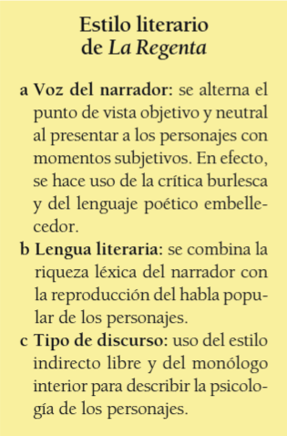
Leopoldo Alas, Clarín (1852-1901)
Actividades
Comentario de texto pág. 81
Realiza todas las actividades correspondientes al comentario de texto sobre La Regenta que encontrarás en la página 81 de tu libro de texto.
Concepto a debatir en clase: Identifica cómo se refleja el "estilo indirecto libre" en el fragmento leído y qué aporta a la empatía del lector con Ana Ozores.